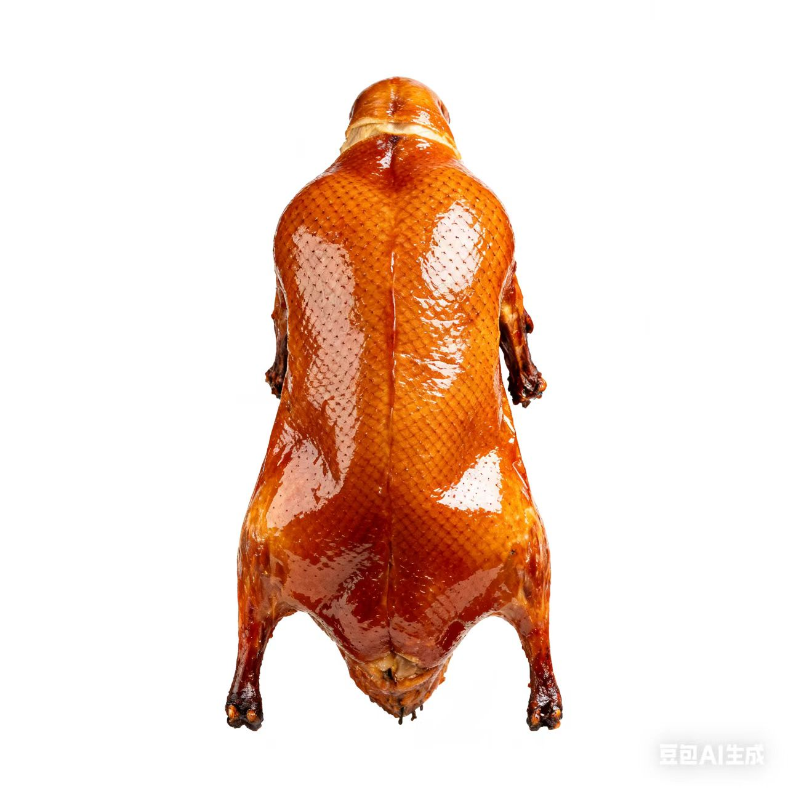
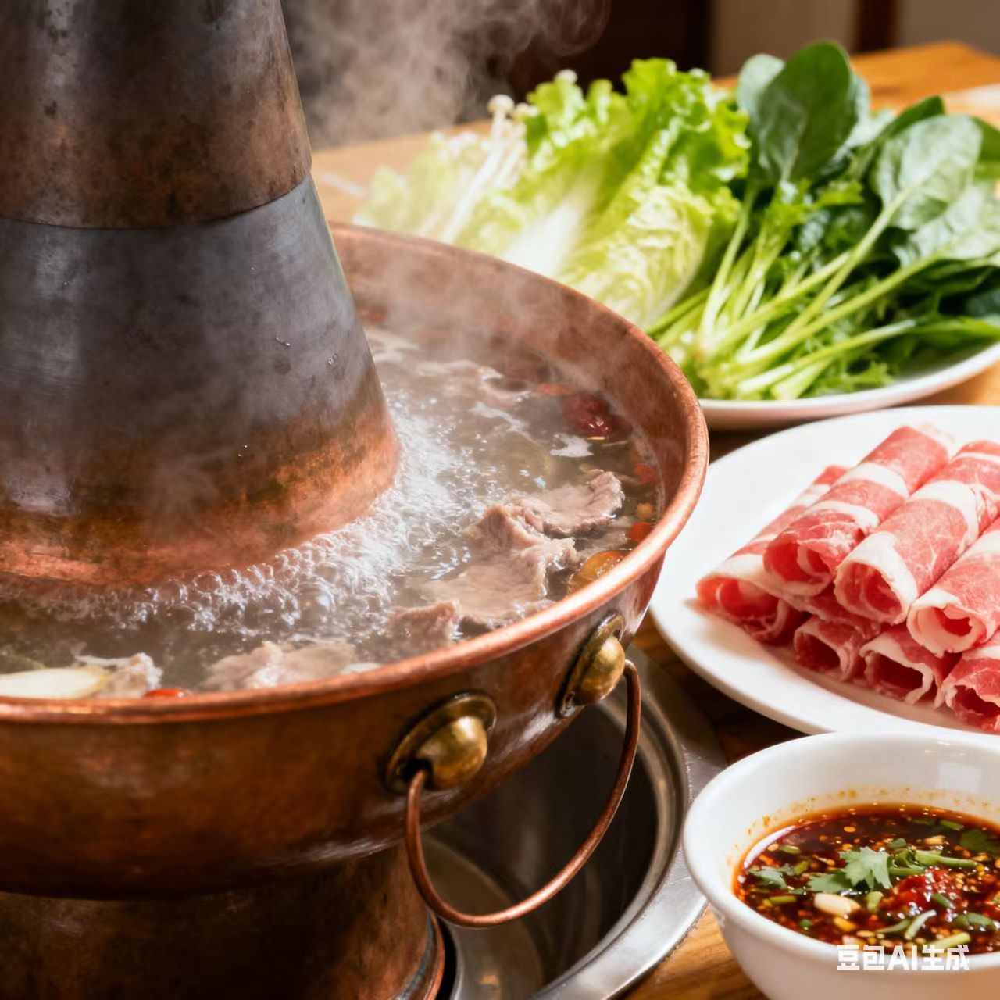
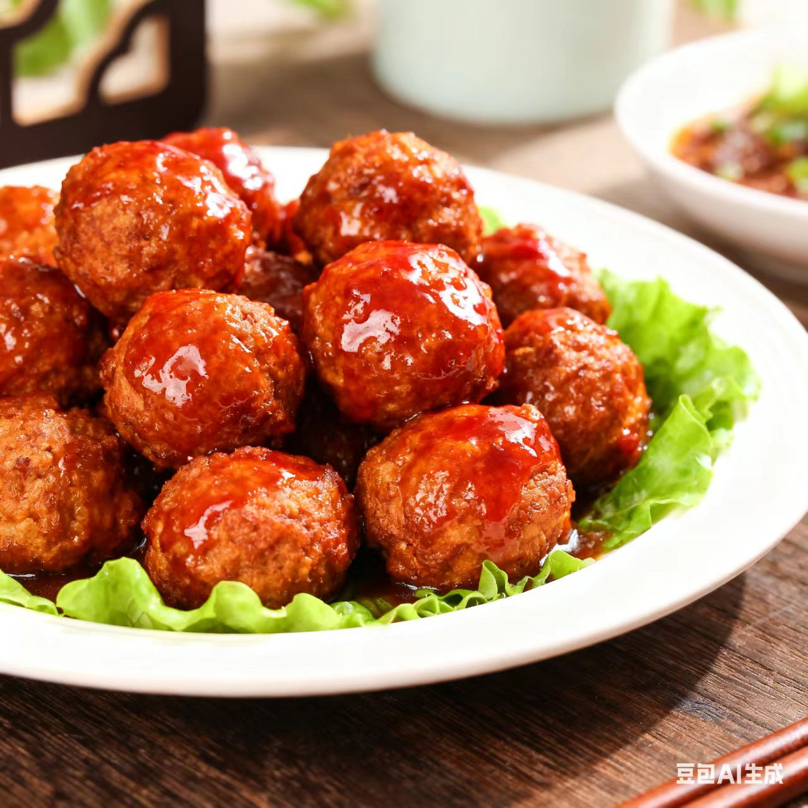

京菜 · jing Cuisine
兼容并蓄里的宫廷气派与市井烟火
一、起源与历史
京菜发源于北京，明清时以宫廷菜、王府菜为核心，融合鲁、豫、苏、浙等菜系技艺，又吸纳民间市井风味，形成“华贵与质朴兼具”的体系，烹饪思想强调“原汁原味、咸鲜适中”，讲究“形神兼备、礼仪周全”
二、地理与气候影响
北京作为古都与交通枢纽，食材汇集南北（禽畜、海鲜、杂粮、时蔬齐备），气候干燥寒冷让饮食偏向“醇厚温热”，宫廷宴席的规格要求与民间饮食的务实需求，共同塑造了京菜的多元风格
三、主要烹调技法
- 炒
- 爆
- 烧
- 蒸
- 焖
每种技法兼具“宫廷精细”与“市井粗犷”，如挂炉烤讲究火候均匀，爆菜追求脆嫩爽口，焖菜注重醇厚入味
四、代表菜肴
-
北京烤鸭

-
涮羊肉

-
焦溜丸子

五、风味与审美
京菜的独特在于“以咸为基、以鲜为核、以和为美”，追求浓淡相宜、醇厚不腻的平衡，味觉逻辑体现了北京“包容四海、大气谦和”的城市特质
六、文化意象
京菜不仅是饮食，更是古都“皇权文化+市井文化”的载体——从宫廷宴席的“满汉全席”到街头的“豆汁焦圈”，京菜承载了“庙堂之高与江湖之远的味觉交融”
七、地方俗语
全聚德的鸭子——名不虚传
北京饮食，三分吃味，七分吃情
拓展视野：视频
拓展视野：学术资料
| 研究论文 / 报告名称 | 链接 |
|---|---|
| 《北京烤鸭的历史演变与烹饪技艺》 | 查看论文 |